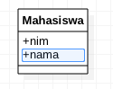
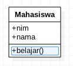

Jobsheet 02
Pengenalan Java
Table of Contents
1 Kompetensi
Setelah menempuh pokok bahasan ini, mahasiswa mampu:
- Mengenal dan memahami karakteristik, platform serta lingkungan pengembangan program Java.
- Memahami secara teknis tahapan pengembangan program di Java.
- Mengidentifikasi dan menggambarkan class ke dalam class diagram.
2 Pendahuluan
2.1 Java
Java merupakan salah satu bahasa pemrograman yang mendukung konsep OOP secara penuh. Pada awalnya Java dikembangkan oleh Sun Microsystem pada tahun 1995. Beberapa tokoh yang mengembangkan Java antara lain Patrick Naughton, Mike Sheridan, James Gosling dan Bill Joy. Mereka memulai pengembangan Java pada tahun 1991.
Beberapa karakteristik Java diantaranya:
- Secara penuh menerapkan atau mendukung konsep OOP
- Mendukung teknologi jaringan terdistribusi
- Java bersifat sederhana karena menghilangkan konsep Pointer yang mmeungkinkan mengakses alamat memori secara langsung. Di Java juga tidak ada deconstructor. Proses penghapusan obyek yang sudah tidak lagi digunakan dalam program, akan dilakukan secara otomatis oleh GC (Garbage Collector).
- Mendukung beberapa proses yang bisa jalan secara parallel (multithreading)
Java tidak tergantung pada suatu platform sistem operasi tertentu (multiplatform/platform independent). Sekali program Java dikembangkan, maka ia bisa dijalankan pada semua sistem operasi, selama di sistem operasi tersebut telah mendukung JVM. Konsep ini yang sering juga disebut Write Once Run Anywhere (WORA).
Pada platform dependent, untuk berkas kode akan dikompilasi oleh compiler yang ada pada sistem operasi masing-masing. Hasil proses kompilasi akan menghasilkan file executable yang hanya dapat dieksekusi oleh sistem operasi tersebut. Jika ingin menjalankan pada sistem operasi lain, maka perlu dilakukan kompilasi ulang.
Sedangkan pada platform independent (Java), proses kompilasi dilakukan hanya sekali. Proses kompilasi menghasilkan file java bytecode (.class) yang dapat dieksekusi pada semua platform (dengan syarat sudah terinstall JRE). Tidak perlu dilakukan kompilasi ulang untuk mengeksekusi pada sistem operasi yang berbeda.
Java memiliki beberapa grup teknologi diantaranya:
- Java Standard Edition (J2SE) untuk pengembangan aplikasi desktop.
- Java Enterprise Edition (J2EE) untuk pengembangan aplikasi enterprise.
- Java Micro Edition (J2ME) untuk pengembangan aplikasi mobile.
- Java Smartcard
Alur pengembangan program Java ditunjukkan pada Gambar berikut:

Kode program Java pertama kali ditulis dalam file teks dengan ekstensi .java. Setelah itu file .java di-compile oleh Java Compiler. Dari hasil kompilasi ini diperoleh file .class yang berisi Java Bytecode. Java VM selanjutnya akan menerjemahkan file .class tersebut sehingga program tersebut bisa dijalankan. Java VM tersedia untuk berbagai macam sistem operasi. Oleh karena itu, file .class yang sama akan mampu dijalankan di berbagai sistem operasi.
2.2 UML
UML (Unified Modelling Language) merupakan bahasa standar yang digunakan untuk menentukan, menggambarkan, membangun dan mendokumentasikan artefak dari sistem perangkat lunak. UML dibuat oleh Object Management Group dan rancangan spesifikasi UML 1.0 diusulkan pada tahun 1997. UML terdiri dari beberapa diagram, antara lain: Use Case Diagram, Activity Diagram, Sequence Diagram, Class Diagram, Component Diagram serta Deployment Diagram. Dalam pembahasan ini hanya difokuskan pada Class Diagram.
Class diagram menggambarkan atribut-atribut dan operasi-operasi (method/behavior) suatu class pada sebuah sistem. Class diagram secara luas digunakan dalam pemodelan sistem berorientasi objek karena merupakan diagram UML yang dapat memetakan secara langsung dengan bahasa berorientasi objek.
Pada contoh class diagram sederhana di atas, terdapat class Mahasiswa yang mempunyai atribut-atribut nim dan nama serta mempunyai method belajar(). Atribut menyimpan sebuah informasi atau state. Sedangkan method menggambarkan tingkah laku dari sebuah class. Setiap atribut maupun method mempunyai visibility (access modifier), pembahasan mengenai hal ini lebih lanjut akan dijelaskan pada materi enkapsulasi.
3 Percobaan
3.1 Instalasi JDK (Java Development Kit)
Prosedur Percobaan
- Download installer Java Development Kit (JDK) pada alamat ini.
- Pilih Accept License Agreement kemudian pilih JDK berdasarkan sistem operasi yang digunakan. (Catatan: untuk sistem operasi berbasis UNIX, sebaiknya cara instalasi menggunakan package manager yang tersedia, contoh: apt, yum atau homebrew).
- Setelah file installer selesai diunduh, kemudian jalankan serta ikuti instruksi proses instalasinya.
- Untuk langkah selanjutnya, hanya dikhususkan untuk sistem operasi Windows. Pada Windows diperlukan setting PATH terlebih dahulu sehingga perintah java dapat dikenali.
- Buka Control Panel → System → Advanced System Setting → Environment Variable. Kemudian cari variable PATH. Jika belum ada, maka buat variable PATH tersebut.
- Jika variable PATH sudah ada, dan nilai dari variable tersebut sudah ada, maka jangan dihapus nilai sebelumnya. Cukup tambahkan C:\Program Files\Java\jdk<version>\bin (sebagai pemisah antar nilai digunakan karakter ;). Lokasi nilai JDK yang ditambahkan sesuaikan folder dimana Java terinstall.
- Buka Command Prompt dan ketikkan perintah javac -version. Jika perintah tersebut dikenali, maka lingkungan sistem operasi windows telah mendukung program java. Jika belum dikenali, ada kemungkinan kesalahan dalam memasukkan lokasi direktori bin pada variable PATH.
Pertanyaan
- Jelaskan apa kegunaan memasukkan lokasi folder bin dari Java ke dalam variable PATH?
- Selain JDK, ada istilah JRE dan JVM. Jelaskan apa perbedaan dari ketiga istilah tersebut!
- Jelaskan mengapa program Java bersifat Multiplatform?
3.2 Aplikasi Java Sederhana
Prosedur Percobaan
- Buka aplikasi text editor (Sublime, Notepad++, Atom atau Notepad) yang telah terinstall di komputer anda!
- Buat file baru dengan nama HelloWorld.java
Kemudian tuliskan kode program di bawah ini!
class HelloWorld { public static void main(String args[]) { System.out.println("Hello World!"); } }
- Simpan, kemudian buka aplikasi Command Prompt dan masuk ke lokasi folder dimana file HelloWorld.java tersimpan.
Compile HelloWorld.java dengan perintah.
javac HelloWorld.java
- Perhatikan hasil proses kompilasi, jika proses kompilasi berhasil akan muncul file baru dengan nama HelloWorld.class
Untuk menjalankan program yang telah dikompilasi, masukkan perintah
java HelloWorld
Pertanyaan
- Jelaskan apa kegunaan perintah javac NamaFile.java? Apa yang dihasilkan dari perintah javac tersebut?
- Jelaskan apa kegunaan perintah java NamaClass?
- Apa kegunaan fungsi main() pada blok kode Java?
- Apa kegunaan kata kunci class dalam program Java?
- Apa kegunaan perintah System.out.println() dalam program Java?
- Ambil kesimpulan tentang bagaimana tahapan proses pembuatan program Java berdasarkan percobaan tersebut!
3.3 UML (Class Diagram) Sederhana
Untuk membuat Class Diagram dapat menggunakan perangkat lunak yang khusus dirancang untuk membuat UML. Dalam percobaan ini digunakan perangkat lunak StarUML. Anda dapat menggunakan perangkat lunak lainnya.
Prosedur Percobaan
- Unduh installer StarUML pada alamat http://staruml.io/download.
- Pilih installer sesuai dengan sistem operasi yang anda gunakan.
- Setelah installer tersimpan, jalankan dan ikuti proses instalasi.
- Tampilan utama StarUml terdiri dari beberapa panel
- Main: digunakan untuk meletakkan model sebuah diagram.
- Working Diagram: panel yang menampilkan semua daftar diagram.
- Toolbox: panel yang digunakan untuk menambahkan model serta relasi.
- Model Explorer: panel yang me-list semua model yang terlibat dalam diagram
- Editors: panel yang digunakan untuk mengatur styles serta properties dari model.
- Minimap: panel yang menampilkan diagram dalam ukuran mini.
- Untuk menambahkan class baru, pada Model Explorer klik kanan Model → Add → Class atau gunakan panel Toolbox
Ubah nama class menjadi Mahasiswa pada panel Editors → Properties.
Nama class diawali dengan huruf kapital, jika lebih dari satu kata setiap awal kata menggunakan huruf besar (aturan seperti ini dikenal dengan istilah CamelCase).
- Kemudian drag class Mahasiswa ke dalam Main panel.
- Untuk menambahkan atribut, klik kanan pada model class Add → Attribute
Set nama atribut menjadi nim pada panel Editors
Untuk menambahkan tipe data anda dapat menggunakan type pada panel Editors → Properties
- Ulangi langkah menambahkan atribut untuk atribut nama.

- Untuk menambahkan method pada class, klik kanan pada model class Add → Operation (pada StarUML method dinotasikan dengan Operation).
- Ubah nama method menjadi belajar pada panel Editors

Untuk menyimpan menjadi gambar, gunakan menu File → Export Diagram As → PNG
Jangan menggunakan screenshoot untuk menyimpan menjadi gambar.
Pertanyaan
- Apa yang membedakan antara atribut dengan method?
Buatlah Class Diagram dari class di bawah ini!

Pada tabel di bawah ini, terdapat nama-nama class, atribut dan method. Dari tabel tersebut, pilah class, atribut dan method kemudian gambarkan ke dalam Class Diagram!
belang nama DVD player play dosen lagu mengeong mengajar warna bulu kucing pause nip
4 Tugas
Modifikasi program di bawah ini, sehingga memunculkan nim serta nama anda!
class Mahasiswa { private String nim; private String nama; public Mahasiswa() { } public void setNim(String nim) { this.nim = nim; } public String getNim() { return nim; } public void setNama(String nama) { this.nama = nama; } public String getNama() { return nama; } public static void main(String args[]) { Mahasiswa mahasiswa = new Mahasiswa(); mahasiswa.setNim("1234567890"); System.out.println(mahasiswa.getNim()); } }
- Rancanglah sebuah class, tuliskan atribut dan method kemudian gambarkan dalam sebuah class diagram!
- Kumpulkan semua percobaan serta tugas kepada Dosen Pengajar!